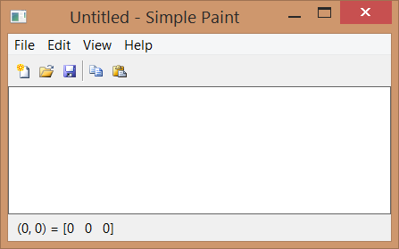
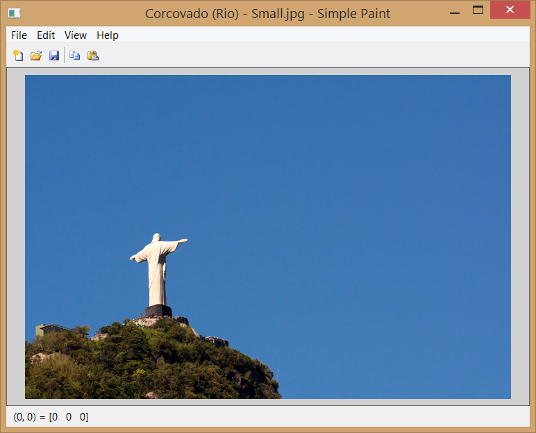
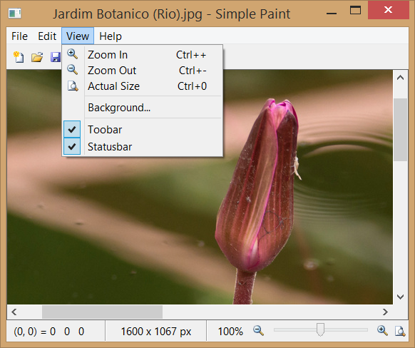
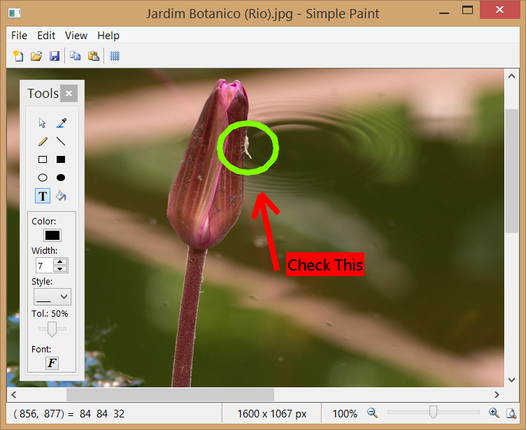
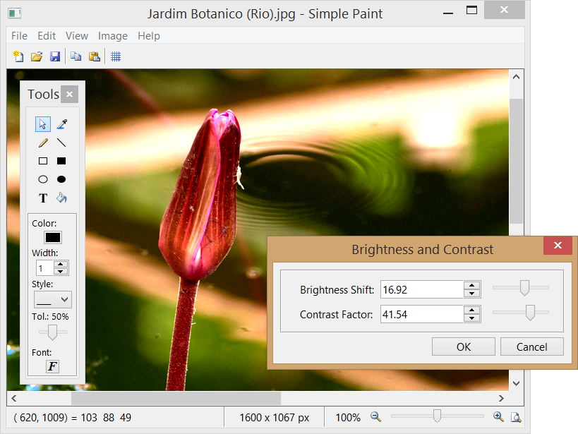

[in Lua] example4_1.lua
[in Lua] example4_1.lua In the previous chapter, we saw how to build a simple notepad using IUP. In this chapter, we will modify the code presented in the previous chapter and build an application that draws on an image, most like simple paint programs. To do so, we need a structure that represents an image and a few functions that allow us to read and save images in known formats. Therefore we will make use of a library called IM.
IM is a digital images manipulation library. Its main goal is to provide a simple API and abstraction of imaging for scientific applications. In order to use IM in our application, some new includes a are needed: "im.h" which is the main header of IM; "im_image.h" which deals with creation, loading, attribute manipulation and images storage; "im_convert.h" which deals with the conversion among different types of images; and "iup_im.h" which allows the loading and images storing through IUP. Similar to what we did in section 2.1.1 to link IUP's libraries, we will also need to modify the project's link to include the IM (-lim) library and use a C++ linker, even with C code (because internally IM uses C++). More details in section Build Applications of Manual da IM. In Lua, you only need to include two new requires: imlua and iupluaim.
We also added a few functions such as str_fileext which extracts the file extension from the filename; show_error which creates and exhibits on the screen an error message; and show_file_error which uses show_error to inform the user what kind of error has happened during the opening of an image file. We also have the set_file_format, which sets in what file format the image must be saved based on the extension of the selected file, and the select_file which selects a file for reading or saving. The functions related to text manipulation, and some items from Edit menu such as Cut, Del, Find, Replace, Go To, Select All and Format menu were removed, because their use in this application does not make much sense.
The functions read_file and write_file now use the IM functions, so as the copy and paste items of the Edit menu. The IM functions imFileImageLoadBitmap and imFileImageSave are entitled to read and save an image from and to a file, using the imImage structure. Note that in the reading, besides the error processing, a test is necessary to convert the image to RGB type, in case it is not of this type yet. This happens because the IM works with several image types and, for the time being and to simplify things, we will adopt the RGB format for the SimplePaint. In writing, we use the same reading format. This format is obtained through an attribute of the image, using the imImageGetAttribString function.
In the functions that create a new image, we keep the current image using an IMAGE attribute of canvas, and thus we assign this attribute with a new image and then we destroy the previous image to free-up memory space. The function set_file_format was created to treat the format in which the new image must be saved. Usually, we use the same format as the original image. The JPEG format was defined as default, since it is the most popular one.
Another change happened in the clipboard use. The access is done just like in Simple Notepad, but using the NATIVEIMAGE attribute to copy and paste images. This attribute requires a specific format, and for that we used the IUP function called IupGetImageNativeHandle , which generates this format from an imImage and vice-versa. Just after the image is read from a file or pasted on the clipboard, we need to redraw the canvas, to do so we call the IupUpdate function that will be in charge of calling the redraw callback. Note also that the image on the clipboard could be of any kind, since it was not necessarily copied from this application. Since our application works only with RGB, it may be necessary to remove the alpha channel using imImageRemoveAlpha, and convert the format using imConvertColorSpace.
Yet, as we save a new file, besides the name of the new file, we need to select an image format that will be defined by the file extension. The set_file_format function was created to recover this extension and establish the format in which the new image must be saved. The JPEG format was defined as default, since it is the most popular one.
Another interesting novelty was the creation of a select_file function that establishes what type of file dialog treatment must be opened. Since dialogs for open file and file saving are very similar, we encapsulated their creation in one single function.
In this example, we also present a new pre-defined dialog called IupGetParam, which is used in the File/New to obtain the height and width dimensions of the new image. After this data is obtained from the user, the imImageCreate function is called, which creates a new image, with the height and width previously obtained, and of the RGB type, as explained above.
Note that the image drawing is not implemented in this first example, and therefore it will be the object of this tutorial's next item.
In Lua, as mentioned before, the includes are replaced by the imlua and iupluaim requires. As with the IUP, IM is also a Lua package. Its functions are retrieved by the "im." prefix followed by the name of the function without the im present in C. For example: we have im.FileImageLoadBitmap instead of imFileImageLoadBitmap. The functions that in C receive an image as parameter (imRemoveAlpha, imImageDestroy, etc) in Lua are functions of the image itself and are called using ":" (image:RemoveAlpha, image:Destroy, etc), dismissing the image passing as parameter. While Lua has garbage collection, it is also a good practice to call image:Destroy to free-up the memory allocated for the images, since in large applications, which work with several images, the memory consumption could become a problem.
Example Source Code
[in C] example4_1.c
[in Lua] example4_1.lua

As we saw in the beginning of this tutorial, that IUP is a toolkit for the creation of interface with the user. Although having among its controls a canvas, it does not have functions for drawing on it. For that it will be necessary to include an external library. Among a few options, we choose for this example the OpenGL library for its portability, performance and standardization.
In order to use OpenGL with IUP, besides the GL/gl.h, windows.h (in case you are using windows) and iupgl.h includes, we will need to link with some libraries too. In Windows, opengl32.lib is used, while in Linux the -lGL must be included. The IUP canvas that works with OpenGL is also an additional control called IupGLCanvas. A call to IupGLCanvasOpen must be included after IupOpen so that this control is available.
In the code, calls to imImageGetOpenGLData in read_file and in new_file, were included to convert the read/created image in an OpenGL compatible format. A canvas action callback was also created. This callback is executed whenever the canvas needs to be redrawn. In this callback, we inform that our GL canvas is the current canvas using IupGLMakeCurrent, we start the OpenGL configuration by setting the image alignment to 1, and we adjust the OpenGL coordinates transformation, which by default are between 0 and 1, to between 0 and the canvas size, in a relation of 1 to 1 in pixels. We clean the canvas with the background color using glClearColor and glClear. Next, we obtain, through the GLDATA attribute, the image data in OpenGL format that needs to be drawn. Then we draw the image in the center of the canvas with glDrawPixels. Note that the glRasterPos2i and glDrawPixels functions do not accept values outside the screen, thus because of this OpenGL limitation, the image to be shown must be smaller than the canvas, or it will not be drawn. We can get around this limitation by using the OpenGL textures support. However, its usage is beyond the scope of this tutorial.
In our example, we are working with double buffer, since we set the BUFFER attribute to DOUBLE in the main function when we created the canvas. This entails that the drawing will be made outside the screen, on a separate buffer. When we finish calling the drawing functions, we show the result by displaying this buffer to the user. To show the result, we call the IupGLSwapBuffers function.
In this example, we use another IUP pre-defined dialog called IupColorDlg. The IupColorDlg is displayed for the selection of a new background color in the View menu. It is a dialog for color selection, and in our example, it changes the canvas background color.
In Lua, to use the OpenGL functions, we use the LuaGL. For this, you only need to require the "luagl" package. To use the IupGLCanvas you should also require the "iupluagl". The LuaGL functions follow the Lua standard packages and use the "gl." prefix, for example: "gl.Func" instead of "glFunc" in C.
Example Source Code
[in C] example4_2.c
[in Lua] example4_2.lua

In this section, we present an alternative to the OpenGL library. Although having an excellent performance, the OpenGL library has some limitations. There is no support for printing, no metafile output, and it also does not provide support to high quality text. Therefore, many applications need other options. To attend to this other needs, we created the CD library – Canvas Draw. You can find this library on: www.tecgraf.puc-rio.br/cd, and it was designed to function together with IUP.
To use it, you need to link with the "cd" and "iupcd" libraries. The "cd.h" and "cdiup.h" includes must appear in the code.
Since we are replacing the OpenGL for the CD, we once again work with the IupCanvas control instead of IupGLCanvas. We can also remove the libs and OpenGL includes added in the previous section.
In the code, the OpenGL functions calls are no longer needed. IupGLMakeCurrent was replaced by cdCanvasActivate, glClearColor by cdCanvasBackground, glClear by cdCanvasClear, and IupGLSwapBuffers by cdCanvasFlush.
The new MAP_CB e UNMAP_CB callbacks were included. The MAP_CB callback, called canvas_map_cb, is responsible for creating the CD canvas using the cdCreateCanvas. This is necessary, because to create the CD canvas, the IUP canvas must be mapped beforehand on the native system. One of the parameters that this function receives is the CD_IUPDBUFFER. This informs the CD that it must work on Double Buffer, the same way we have been doing in Open GL. Note that there are now two types of canvas in use - the IupCanvas control and the CD library cdCanvas. Thus in this callback it is also done an association between these two canvas through a call to IupSetAttribute, so it can be retreived later in the action callback. The UNMAP_CB callback named canvas_unmap_cb retrieves the CD canvas associated to IupCanvas control and destroys it by calling cdKillCanvas. The callback responsible for drawing the image on canvas continues to be the canvas_action_cb, the difference is that besides having replaced the OpenGL calls as mentioned before, several of them were removed and replaced for only imcdCanvasPutImage. This single call draws an IM image on a CD canvas.
Taking advantage that the CD supports printing, we added a few resources to Simple Paint. Other new callbacks are: item_pagesetup_action_cb which is responsible for obtaining from the user, through IupGetParam, the height and width of the margin of print preview page; view_fit_rect which adjusts the screen to display the entire image; and item_print_action_cb which shows the printing dialog.
We also have two new menu items: item_pagesetup e item_print, which call the callbacks with the same name. The print item was associated to a CTRL+P hotkey.
In Lua, the "cdlua" e "iupluacd" requires are necessary. We can remove the "luagl" and "iupluagl" used in the previous example. The CD call function in Lua use the "cd." prefix, as in cd.CreateCanvas instead of cdCreateCanvas and etc. Note that the imcdCanvasPutImage function uses the "im." Prefix, since it belongs to the IM library.
Example Source Code
[in C] example4_3.c
[in Lua] example4_3.lua

In this section, we will add an interactive zoom to our application. To do so, we need to draw the image with a bigger or smaller size than its actual size. This magnification factor needs to be interactively modified by the user through different paths.
Besides that, if the image is bigger than the canvas that we have to draw it, we need a mechanism that allows us to move its visible area. This mechanism is the scrollbar. To enable the scrollbars, we set the SCROLLBAR=Yes attribute of the IupCanvas. But we have to configure them every time the magnification factor is modified and when the application window changes its size. Thus, we need to implement the RESIZE_CB callback of the canvas, so that it calls the scrollbar_update function that calculates the scrollbar parameters.
To change the magnification factor, we created a few mechanisms and also added some controls to the statusbar. They are: an IupVal which selects a value on a given interval, and three buttons that are responsible for the zoom in, zoom out, and return to original actions. The same buttons' actions can be made through the View menu using item_zoomin, item_zoomout and item_actualsize. We also created hot keys that activate these buttons: CTRL+ (zoom in), CTRL- (zoom out) and CTRL0 to return to original size. Finally, we added a WHEEL_CB callback of the canvas, which is activated through the mouse wheel. In it we used the delta parameter to modify the zoom factor. You can find these news controls in the create_main_dialog function, in which we used a shortened way to create a control hierarchy using IupSetCallbacks and IupSetAttributes together. The result is similar to the creation of controls in Lua. The zoom factor is changed linearly, but its effect is of a power of 2, therefore the controls modify what we call zoom_index between -6 and 6 limits, and the zoom factor is calculated by doing pow(2, zoom_index), which results in a zoom interval of 1% and 6400%. To use the pow function, it is necessary to use the math.h include.
The scrollbar_update function performs a very complicated calculation, which is described in the IUP Manual on the SCROLLBAR attribute documentation. This is necessary because of the AUTOHIDE attribute, which automatically hides the scrollbar. Notice that in this function, we obtained the canva size in pixels through the RASTERSIZE attribute, and we removed two pixels. This happens because the IupCanvas has the BORDER attribute set as "YES" by default. Thus it is necessary to remove 1 pixel (size of the edge) for the left edge and another for the right edge. The same happens to the superior and inferior edges. We only configure the DX and DY parameters of the scrollbar to equal the visible area of canvas with the magnified zoom. We leave the XMIN, YMIN and XMAX, YMAX parameters with the default values of 0 and 1, respectively. The POSX e POSY attributes inform the shift that the image drawn with zoom must have in order to move according to the scrollbar. Since POSX e POSY are between 0 and 1, this shift in pixels is obtained by multiplying the attribute values for the total size of the image in zoom (view_with e view_height). The scrollbar_update function works together with two new functions. When the scrollbar is updated, the scroll_calc_center and the scroll_center are necessary to keep the image displayed in the same position on the screen while changing the scrollbar configuration.
Once we have modified the magnification factor, we need to draw the image. For that, in the action callback of the canvas, we add a new calculation to obtain the position and size of the image to be drawn on canvas. This calculation obtains the zoom factor, resizes the visible area by multiplying by this factor, and repositions the image on canvas.
Since we had been modifying the action, we also added a border around the image using cdCanvasRect. We did this because when we include the zoom and scroll, it is usually difficult to locate the image borders, especially if it looks like the background color. Therefore it is common to include an edge around the image to mark the end of it.
We noticed that in example 4_4, we could improve the application state of control when a new image is created. For that, we created the set_new_image function that replaces parts of the code in New, Open and Paste. In this function, we encapsulated the change in the dialog title from the file name, and we verified if the image is RGB as described in section 4.3. We also verified if there is a file format for the new image, and if we should adopt the default format. Furthermore, we set the DIRTY value, and finally restarted the zoom factor to normal visualization at 100%.
In Lua, since the mathematical library is already included in the standard parser, there is no need for a new require. Besides the syntax difference among the languages, there is no particular changes.
Example Source Code
[in C] example4_4.c
[in Lua] example4_4.lua

So now we are going to implement a more complex form of interaction with the canvas. We want to have control over the actions of the cursor when moved or clicked over the IupCanvas. For that we need two new callbacks: MOTION_CB and BUTTON_CB. Inside these callbacks there will be all the logic behind the interactions we want to implement for a Paint application. But in order to do that we need first to define which type of interaction we want.
In a Paint application the interaction is usually defined by a toolbox where the user chooses a tool to interact with the canvas. The toolbox is a dialog with some special characteristics. In our example code this is done by the create_toolbox function. We are going to reduce the default font size, and we are going to use the TOOLBOX attribute, since we want a dialog with a small foot print on screen. The first thing to notice on its internal controls is the use of an IupRadio. All the IupToggle inside the radio hierarchy will be mutually exclusive, so when a tool is selected all the others are not selected. We put all the toggles inside a IupGridBox so they will be automatically aligned in a rectangular grid with 2 columns. And we are going to need custom images for the tools since they are not available at the IupImageLib.
We created those images in a very popular application called Paint.NET. It allowed us to save the RGBA files in the PNG format, then we used the IupView application to convert the files to C source code so we were able to compile them directly inside our application. Another possibility would be to use the IupLoadImage, but then our example will have to be able to locate the image files during run time. All the images were processed and its code is pasted at the beginning of the example source code.
After the tools we added a few other controls to support some tools options. Not all tools use all options, so a future enhance to the example would be to hide and show each option accordingly to the selected tool. But for now we are going to leave all the tools options visible all the time. You will see that the tools use controls and features we already described in previous examples. So let's focus on the tools themselves.
The current tool is saved in a custom attribute called TOOLINDEX. We will also use this approach to save the tools options values, such as TOOLWIDTH, TOOLCOLOR, TOOLSTYLE, TOOLFILLTOL and TOOLFONT. This will make the use of these values a lot easier.
We created 10 tools that will use 4 different types of interaction. (1st type) Pointer will use click+drag to also scroll the image that is larger than the visible canvas. (2nd type) Color Picker and Fill Color will just need a click on the canvas. (3rd) Pencil will directly draw over the image using a click+drag approach. (4th) All the shapes (Line, Rect, Box, Ellipse, Oval and Text) will use click+drag to set flags that activates an overlay process in the canvas_action_cb callback, so the tool feedback can be done over the image. When it is done, the final drawing is rendered over the image itself when the button is released. So there were changes to canvas_action_cb, new implementations in canvas_button_cb and in canvas_motion_cb, all working together to implement each interaction.
All these interactions are done while the mouse is pressed over the canvas or when it is simply clicked (pressed+released). There is another type of interaction that uses the concept of a graphical object over the image. For example, instead of only drawing the feedback while the mouse is pressed, the result creates a graphical object that can be lately modified and manipulated. Just like a selection area in other Paint applications. This implies in a data structure to store the object, and another for the list of created objects. When the mouse is moved near the object, handlers are shown so the user can click and interact with the graphical object. This technique can be use to create a Simple Draw application (like Corel Drawâ„¢), instead of a Simple Paint. Where we will be manipulating vector data instead of raster data, and loading/saving formats like WMF/EMF, SVN, PDF, CGM, DXF, and so on (all supported by the CD library by the way). In terms of user interface features a Simple Draw is most like the same of a Simple Paint application..
The first thing we had to do to implement the interactions was to get that calculation in the canvas_action_cb to obtain the position and size of the image on screen and transform it into a function that we called view_zoom_rect. We are going to need those parameter to convert the coordinates received by the callbacks into coordinates inside the actual image. So in all mouse callbacks, after calling view_zoom_rect we invert the Y axis, because y is top-bottom oriented in IUP, but bottom-top oriented in CD and IM. Then we check if the resulting coordinates are inside the image on screen and convert them to the actual image coordinates using view_zoom_offset. So now (x,y) are inside the image range (0,0)-(image_width-1,image_height-1). In other words we converted screen coordinates into image coordinates.
To actually draw on the image after the interaction we used the CD_IMAGERGB driver pointing to the image data. So we can draw using CD primitives but using the image as the canvas medium. In this way the code becomes very simple an easy to understand. But for text to work properly we must not forget to set the new CD canvas resolution to the same resolution of the screen, so we will obtain a result with the same size in pixels.
For the Fill Color tool we had to implement a flood fill algorithm. We used a very simple 4 neighbors stack based flood fill. So it is also very didatic. There are several optimizations possible, can you point any?
We also used the canvas_motion_cb callback to update the current pixel color on the Statusbar. This will be done independently of the current selected tool.
For better integration of the main dialog with the toolbox dialog we move the toolbox dialog every time the main dialog is also moved. The MOVE_CB callback of the main dialog is implemented and it will simply offset the toolbox dialog by the same offset the main dialog was moved.
As we are adding layers to the image visualization, we also added a zoom grid feature. It will display a grid over the image when the zoom factor is greater than 200% to help the user to identify pixel boundaries.
Example Source Code
[in C] example4_5.c
[in Lua] example4_5.lua

In our final code for this chapter we are going to add a few image processing functions provided by the IM library. We added a new sub menu to the main menu called "Image", and there we added items for Resize, Mirror, Flip, Rotate, Negative, and Brightness and Contrast. Although all these operations are interesting, we would like you to take a look at the Brightness and Contrast operation. We used a IupGetParam dialog as before, but this time we implemented the PARAM_CB dialog callback that allow us to interactively update the image while changing the operation parameters in the dialog. So helping the user to find the best combination for those parameters for the desired result. For this to work we are going to temporarily replace the current image with the processed image, and simply update the canvas. The result is very effective. IM has lots of other image processing operations that we will let you to explore, to use them we need to link with the im_process library too. This will also allow us to replace the flood fill and fill with white routines by imProcess versions.
Since we are adding utilities libraries, let's also include the cdim library that will allow us to replace the CD_IMAGERGB driver by the CD_IMIMAGE driver, and the imcdCanvasPutImage macro by the cdCanvasPutImImage function. Providing a more elegant code for our final version.
And we are done for this chapter. We went from 800 lines, almost all based on our previous example, to 2500 lines. Implementing a fully featured Paint application using IUP and CD resources. Which include loading and saving of image files, drawing and printing of images, zoom and scroll support, and the most important, how to interact with a canvas and its drawing in several ways.
Still there are always possible enhancements such as using the IM Video Capture features to obtain an image from a camera, Undo/Redo support using a stack of images, transparency using an alpha component in color, area selection...
The toolbox is also an interface element that can have several approaches. Instead of jut hiding it we could use IupDetachBox to insert it on the main dialog at the left side of the canvas, so it can has 3 states: hidden, floating as a dialog, and attached just like the toolbar. And when attached there is also another possibility, we could use an IupExpander so we can dynamically show and hide its contents leaving a direct affordance in the dialog to do that.
Example Source Code
[in C] simple_paint.c
[in Lua] simple_paint.lua

In our next chapter we will introduce some advanced techniques for IUP applications.
Note: both images used for the screen shots are Copyright © Antonio Scuri, and distributed under the Creative Common License.
| Previous | Index | Next |